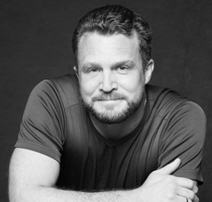

David J. Ley:
Esposas insaciables y El mito de la adicción sexual
David J. Ley es psicólogo clínico y autor estadounidense nacido en 1973 que practica en Albuquerque, Nuevo México. Obtuvo su licenciatura en Filosofía en la Universidad de Mississippi, y su maestría y doctorado en psicología clínica en la Universidad de Nuevo México. El Dr. Ley tiene licencia en Nuevo México y Carolina del Norte, y ha brindado servicios clínicos y de consulta en muchos otros estados. Es Director Ejecutivo de New Mexico Solutions, un gran programa ambulatorio de salud mental y abuso de sustancias en Albuquerque. Ha estado tratando problemas de sexualidad a lo largo de su carrera. Comenzó con perpetradores y víctimas de abuso sexual, pero amplió su enfoque para incluir el fomento y la promoción de una sexualidad saludable y la conciencia de la amplia gama de comportamientos sexuales normativos.
En 2009 publicó su primer libro Insatiable Wives: Women Who Stray and the Men that Love Them. Por este libro ganó una Medalla de Plata en el concurso Foreword Magazine Book of the Year ese mismo año. Lo he traducido al castellano bajo el título Esposas Insaciables: Mujeres infieles y los hombres que las aman. No se trata de un estudio científico ni estadístico, posiblemente esa sea la debilidad de la obra, al no profundizar en los aspectos psicológicos que son la causa del candaulismo. Sirve sin embargo como una ventana hacia ese mundo inexplorado por la literatura científica.
Publicó su segundo libro The Myth of Sex Addiction, traducido como El mito de la adicción sexual, también incluído en esta colección. Como su título indica, demuestra con buenos argumentos, que la "adicción sexual" no es real, un invento para embaucar a la gente y ofrecerles onerosos tratamientos para superar una afección que no existe